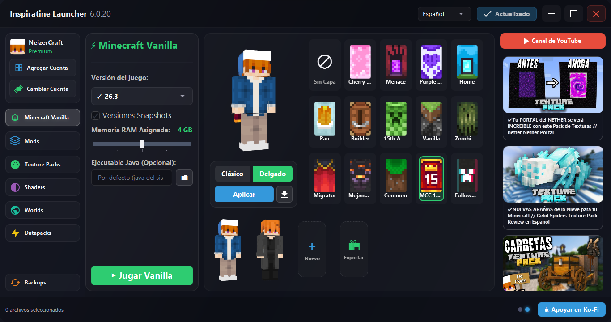

Inspiratine Studios
Consultando versión...
Bienvenido a
Inspiratine Studios
Con Inspiratine Launcher puedes gestionar mods y modpacks y más fácilmente, personaliza tu carrusel de skins y luce tus capas exclusivas. Autenticación oficial de Microsoft y conexión directa al ecosistema de nuestro estudio.
Descargar Inspiratine Launcher
Compatible con Windows 10 / 11 (64-bit)
🔐 Cuenta Oficial Microsoft
📦 Modpacks & Mods en 1-Clic
🎨 Carrusel de Skins & Capas
🛡️ 0/70 en VirusTotal
